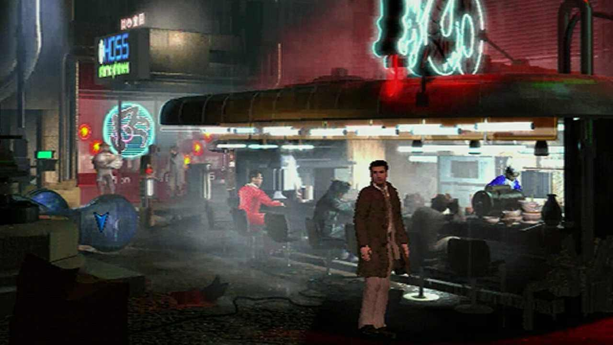
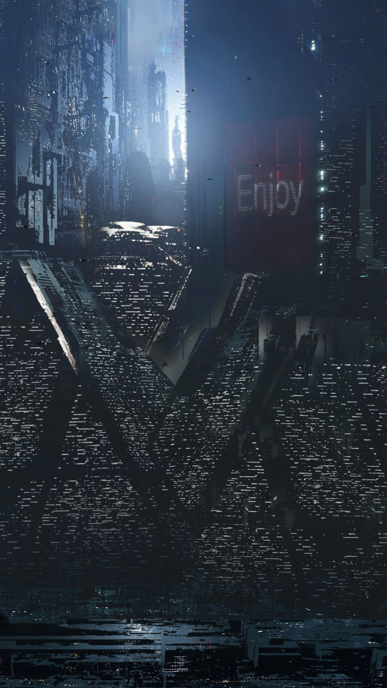

A business sim survival horror inspired by the elusive Linkboys of 18th century Victorian era England, take on the role of a torch bearer in a time when street lights weren't common place, as you guide paying patrons home safely... or to their doom.
Take place right after the very first Industrial Revolution, mysterious black smoke engulfs the entire city in utter darkness. Life becomes a constant struggle between ensuring your own livelihood and people's safe travel home. This is when Linkboy encounters a mysterious cult, promising of a better life for its followers.
Torches need oil, and oil needs crafting, balance between your resources and finances. Guide people home under your light, or bring them to their final destination. After all, who else with a burning light are they going to run to?